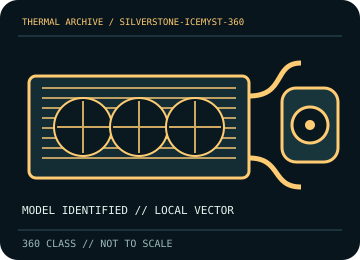

[ INDIVIDUAL COMPONENT // COOLING ]
SilverStone IceMyst 360 (SST-IM360-ARGB)
360 mm IceMyst ARGB AIO with 396 × 120 × 28 mm radiator and 460 mm tubes.

IDENTIFICATION: Match the complete model, regional SKU, revision, and supplied socket kit. Similar names and radiator classes do not guarantee identical brackets, dimensions, leads, or warranty terms.
Manufacturer specifications and compatibility
| Exact model / listing | SilverStone IceMyst 360 (SST-IM360-ARGB) |
|---|---|
| Radiator dimensions and thickness | 396 × 120 × 28 mm aluminum radiator; allow approximately 53 mm with 25 mm fans, plus fittings. |
| Fans | 3 × 120 × 25 mm PWM/ARGB fans; 500–2,200 rpm, up to 75.74 CFM and 3.4 mmH₂O (manufacturer rated). |
| Pump / block | 3,100 ±10% rpm pump; copper-base block. Use its documented 3-pin pump connection. |
| Supported CPU sockets | Intel LGA 115x / 1200 / 1700 / 1851 / 2011 / 2066; AMD AM4 / AM5. Check bracket contents against exact SKU. |
| Tube length / construction | 460 mm rubber tubes. |
| Power, fan, lighting, and display connectors | Fans use 4-pin PWM and 5 V 4-1-pin ARGB; pump uses a 3-pin 2510-style lead. Check motherboard header voltage/current ratings; 5 V ARGB is not interchangeable with 12 V RGB. |
| Warranty | Warranty duration and coverage vary by region; check the current SilverStone terms for SST-IM360-ARGB and retain the sales receipt. |
| Case compatibility | Requires 360 mm radiator mounting with at least 53 mm radiator/fan stack thickness, plus tube bend and fitting clearance. Verify tray length and nearby RAM, VRM heatsinks, and GPU. |
| Motherboard compatibility | Socket support is the listed Intel/AMD series with the supplied bracket. Confirm a compatible fan/PWM header and 5 V ARGB header/controller, and observe the board maker’s per-header limits. |
Warranty, maintenance, and safe installation
Sealed liquid loop: do not open or top up. Disconnect power before cleaning; hold fan blades still and clear dust from the radiator without bending fins. Inspect tube joints and stop operation if leakage or pump failure is suspected.
- Install only with the model-specific manual and included retention hardware. Do not operate a pump dry or allow tubes to kink or rub against sharp edges.
- After installation, verify pump and fan tachometer/control operation and monitor CPU temperature under a repeatable load before normal service.
- Warranty statements are a reference, not a substitute for current regional terms; preserve the serial number and purchase record and contact the manufacturer for service.
Manufacturer sources
- SilverStone — IceMyst 360 product specificationsManufacturer radiator, fan, pump, tube, socket, and electrical specifications.
- SilverStone — IceMyst 360 manual (PDF)Manufacturer installation and wiring guide for SST-IM360-ARGB.
Static catalog reference only. Verify the precise SKU, manual revision, and current local warranty documentation before installation.